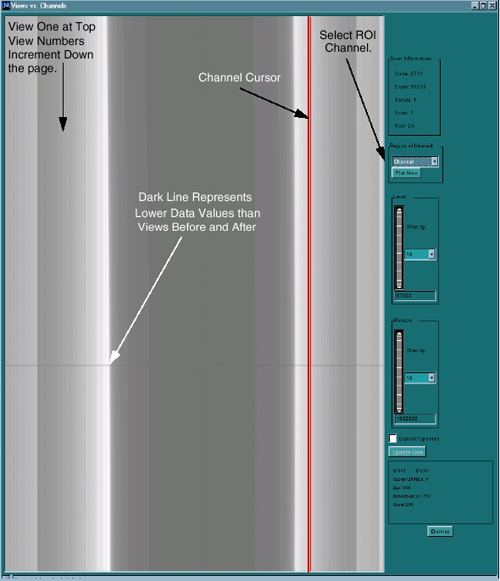
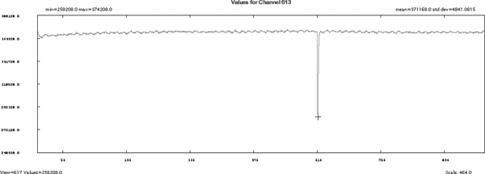
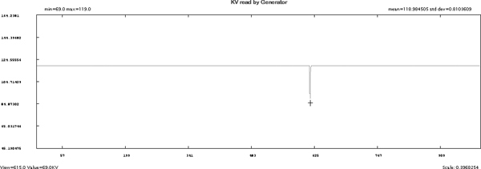
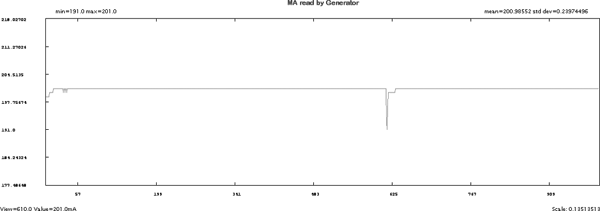

Operating Documentation
Direction 5196839-800, Rev# 6
RT16 and Xtra Service Info Adv
Operating Documentation |
By using a combination of capabilities within Scan Analysis, some things just got easier.
In the past, tube spits as a source of image artifacts were frequently done by implication. The tube has been spitting lately, so the problem might be that.
With some of the new system and software capabilities, it is much easier to confirm some of these diagnosis. For example:
VVC data for scan (refer to Illustration 1). Dark horizontal lines are views with data values lower than the views immediately before and after.
Select Channel Cursor and Plot Now (refer to Illustration 2). Notice how the dip in the channel data corresponds to the views around 615. Next take a look at the kV and mA data.
Illustration 1: VVC Tube Spit Data Example

Illustration 2: All View for one channel KV Spit Data Example

Once again the dip in the KV values reported in the view data corresponds to views around 615.
Illustration 3: - Tube Spit Auxiliary Channel data for kV

Illustration 4: - Tube Spit Auxiliary Channel data for mA

From the previous examples, it is easy to correlate the views with suspect data from the VVC Display with the view by view plots for kV, mA, and Channels. Specific information to look for on the examples:
The Min, Max, and average values for kV, mA, and channel data. This information provides a quick way to determine the scale of the information that you are viewing.
The cursor report information provides a continuous update, depending upon the type of data that is being displayed: data values, view number, channel number.